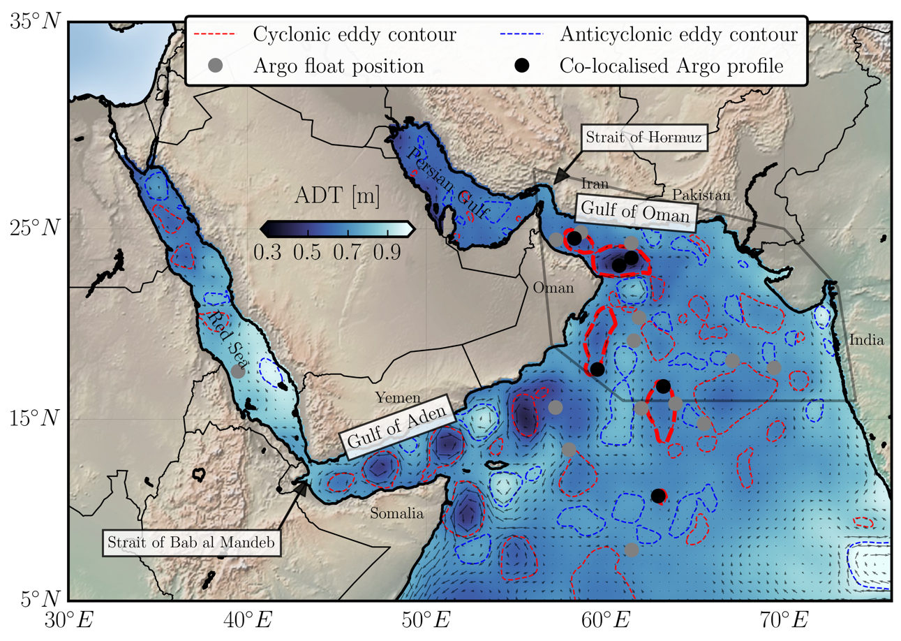

Vortex Dynamics
Destabilization of a Large Realistic Cyclone in a Primitive Equation model (CROCO) at high resolution (dx=500 m)
Vortex merger near a continental slope in a 2-layers Quasi-Geostrophic model. Ref
In situ observations of the Arabian Sea
Characterization of the 3D structure of eddies in the Arabian Sea using altimetric data and Argo floats
Internal waves